I currently serve as structures lead on Olin Rocketry, a community of students passionate about aerospace
engineering. Our current focus is the construction of a series of research and development rockets
progressing in altitude toward a flight into space in 2027.
To meet this ambitious goal, we are developing a variety of technologies which require refined mechanical
engineering, and the close integration of mechanical, electrical, aerospace and chemical systems.
I currently serve as structures lead on Olin Rocketry, a community of students passionate about aerospace
engineering. Our current focus is the construction of a series of research and development rockets
progressing in altitude toward a flight into space in 2027.
To meet this ambitious goal, we are developing a variety of technologies which require refined mechanical
engineering, and the close integration of mechanical, electrical, aerospace and chemical systems.
In my first year on Olin Rocketry, I designed a system of mechanical airbrakes, which enabled active control of a rocket's altitude. Although not directly related to our ultimate goal, this project provided useful experience in integrating mechanical and electrical systems in a package constrained by the form factor, payload capacity, and aerodynamic stresses of a rocket.
The structures team started by generating a variety of concepts and creating sketch models:

We then performed detailed design of the mechanical system, where I was able to apply my existing knowledge of CNC machining and composite manufacturing techniques to design and fabricate lightweight and robust components from aluminum and composites. The airbrakes will be driven by a stepper motor controlling a Tr8x02 lead screw, which drives a set of four-bar linkages, and in turn a pair of carbon fiber composite flaps, which fold into the fuselage.
Due to their role as a part of the rocket's structure, the airbrakes incorporate an aluminum t-bar construction wrapped in plywood and carbon fiber based composites. This resists both the thrust force and off axis forces. I team used ANSYS Fluent CFD to determined the drag forces on the airbrakes. Based on this loading estimate, I performed extrensive calculations on all subcomponents and guided team members in FEA simulations on the airbrakes. Based on these results, I updated the design to prevent failure in flight. These calculations also informed the development of the avionics team's flight control algorithm.

A new experience I gained from this project was the application of analysis to inform a mechanical design which would survive large aerodynamic forces, and an electrical system capable of driving it. Through this process I learned to apply both hand calculations through free body diagrams, and finite element analysis and basic fluid dynamics simulations.
I also designed a new mount for the avionics board which controls parachute deployment
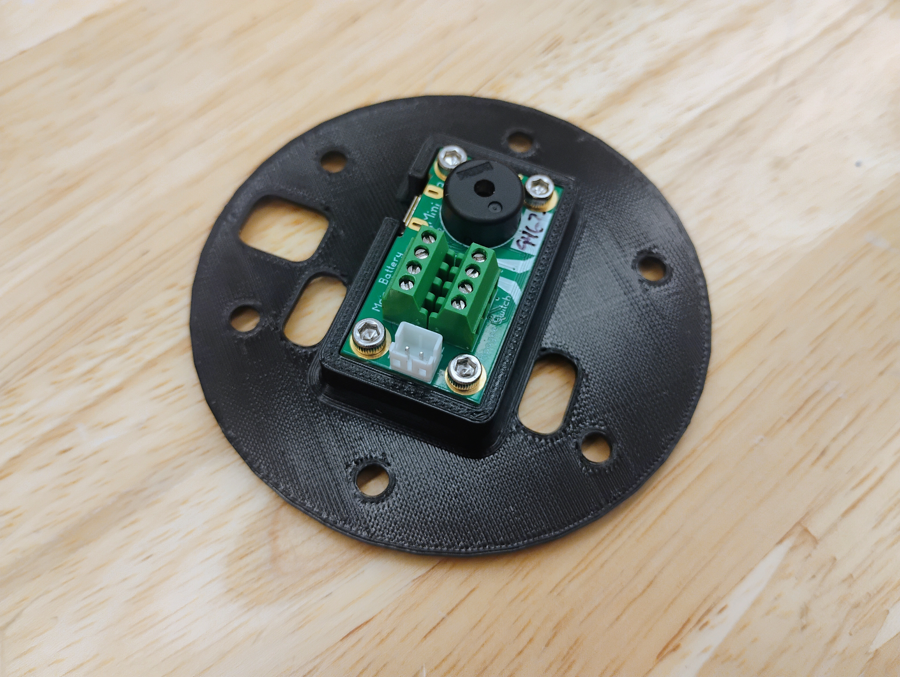
The core of any rocket is its motor: Olin Rocketry uses solid fueled motors. The first motor I worked on failed due to communication errors which led to an overconstraining nozzle. I resolved to gain a more complete understanding of rocket propulsion in order to avert future failures. After studying the textbook Rocket Propulsion Elements, I am used physics principles to calculate the optimal nozzle and casing design to maximize vehicle altitude and motor reliability. After machining a motor for the first time, I saw ways in which nozzle retention could be done more effectively am using my extensive machining experience to develop a design which is easier to produce using manual machining.

As part of a test on a commercial motor to validate testing processes, I machined another custom bulkhead, in this case incorporating a boss port fitting. Boss port tools out of our team's budget, so I turned the boss port's two precise chamfers myself. I carefully cut internal tapers, for which I had to grind a small boring bar. After pneumatic pressure testing, I found that this port performed better than COTS fittings!
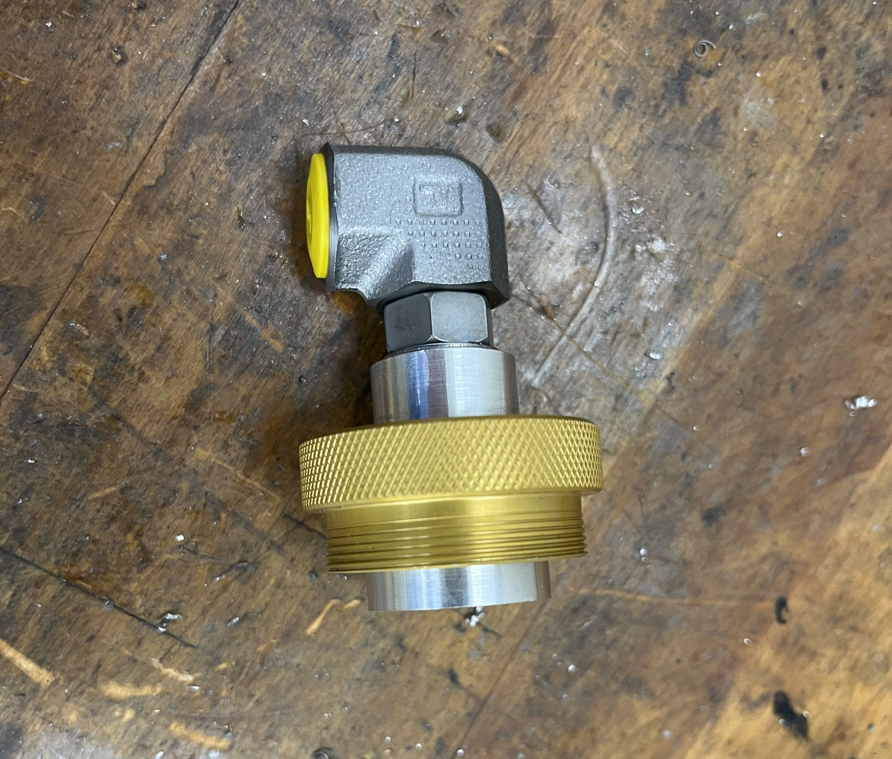
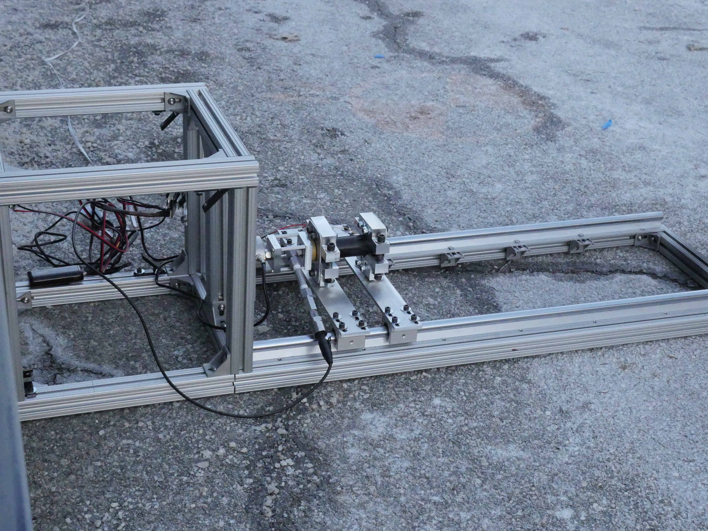
After the aforementioned motor test damaged our test stand, I guided a team of first years in the design of a new one. This was a great opportunity teach basic mechanical engineering principles. Constructed primarily from 8020 extrusions, the test stand allows for motors of sizes from 29mm to 54mm, and with a new set of clamps, could accommadate even larger motors. The stand incorporates a pair of clamps mounted to carriages on linear rails, which allow the motor to freely press against a load cell.

I helped the team verify the strength of their part designs and the structure as a whole using hand calcualtions and FEA studies. I then CNC machined the clamps, while the first years manually machined or saw cut the other parts.
As part of the Olin Rocketry leadership team, I also helped write and implement a new set of safety procedures. This way, we can conduct potentially risky tests without danger to team members or bystanders.
Sometimes, you just have to do something cool! I worked with two friends to design and build a valved pulsejet engine, fueled by propane. Using the inherent resonance of a metal tube to create repeated deflagrations, a pulsejet is a simple and inefficient but very high thrust engine. Ours used a set of reed valves made from spring steel and mounted in a precision machined valve block. This project gave me valuable experience in the process of engineering from scratch: researching past projects, distilling them to principles, and using those to caluculate an optimal design based on a few parameters. In this case, the parameters were 60lbs of thrust, and minimal cost.
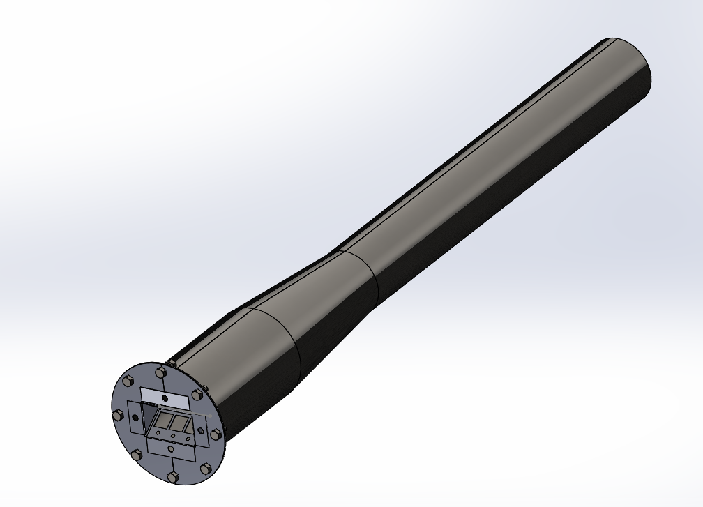
I used equations sourced from various studies to parametrically design, and then fabricated it using conversational CNC machining, manual machining, and sheet metal working. My initial design for a low effort petal style reed valve failed due to the material properties of the spring steel, which would not deflect sufficiently to achieve the engine's resonance.

As a result, I am milling a more complex, v-shaped reed valve design which should provide for better airflow and more reliable valve operation.
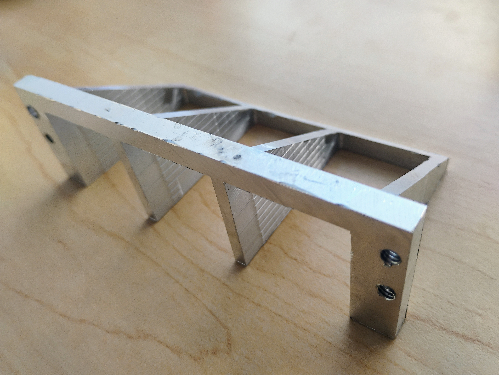
In my work at K-Scale Labs, I desgined and built humanoid robots using rapid prototyping. Stompy, our humanoid robot, is meant to be manufacturable by either hobbyists or mass manufacturers overseas. To achieve these goals, I developed versions using both 3D printing and sheet metal. In the first version I developed, I designed a simple gripper and developed a head which would have all of the functions of a household smart speaker, allowing Stompy to take instructions by voice, view its environment, and respond using audio or visual outputs.
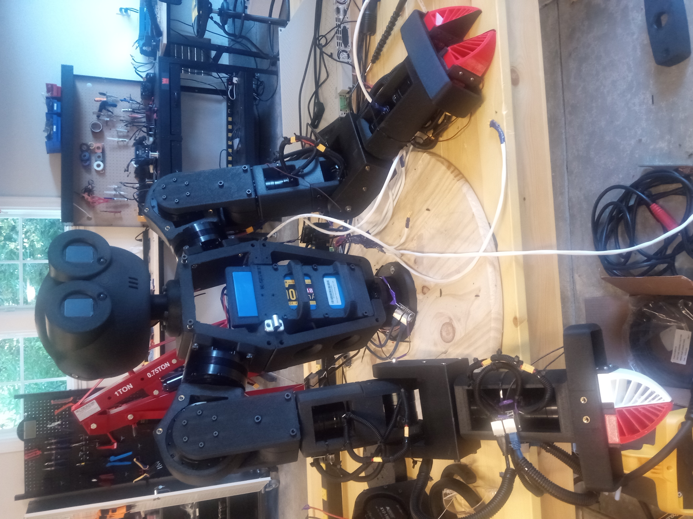
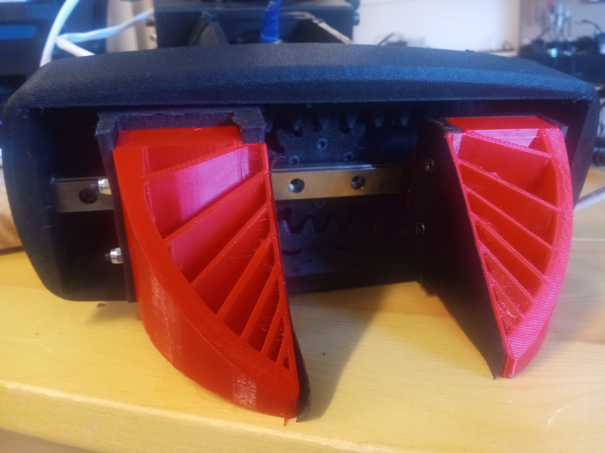
I learned audio engineering principles (not unlike those used in the pulsejet) to produce and receive clear audio from low cost componenets despite vibration caused by motors.

In the second and third variations, I refined the design to incorporate the same capabilities in a smaller package. I created conduit channels for power and data wires to run within the moving limbs of the robot, and designed satisfying, user friendly connectors for the limbs and battery.


I incorporated design for manufacturing principles and learned basic industrial design to make a robot which would be reliable, aesthetically pleasing, and easy to build for people with no technical experience.
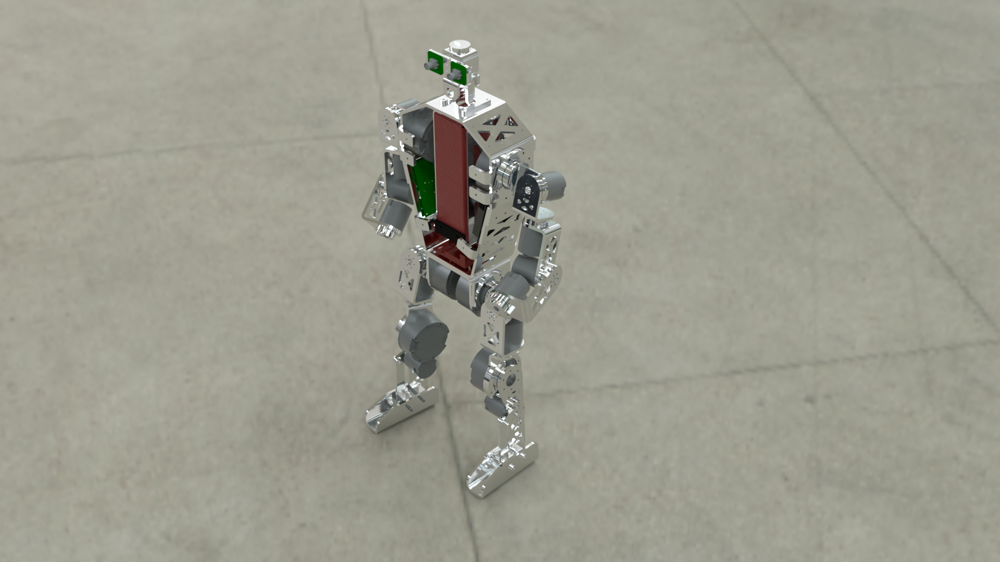

Along the way, I also worked on developing a mobile battery power system and custom battery pack. I also researched alternative future actuator designs using multiple PCB stators to achieve a user-friendly form factor. In doing so, I gained a knowledge of power electronics and motor design.
In Ohio, manufacturing is a core part of culture. I started machining in high school, which has given me an appreciation for the perspective of people who will have to build what I design.
Machinist's Hammer I made in high school:

Stainless Steel Bolt Action Pen:
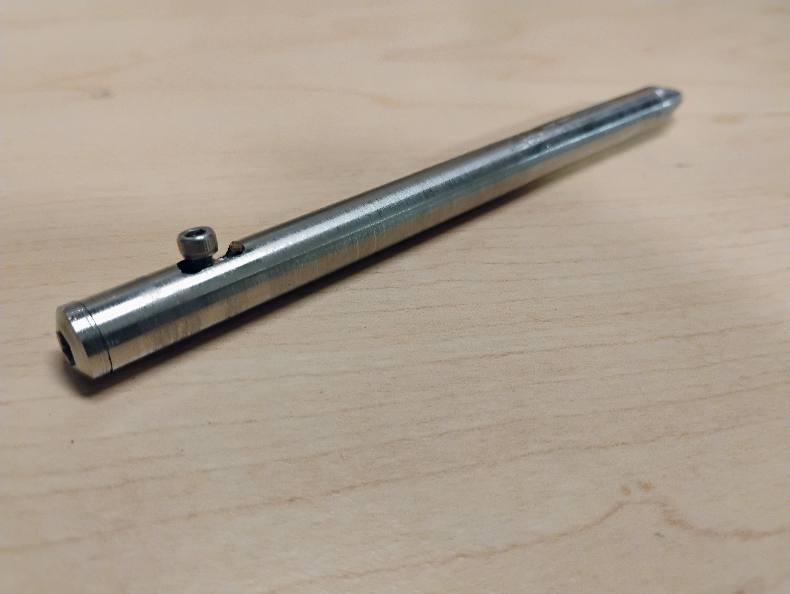
Machining has taught me to intuitively understand the qualities of the materials I work with. I have learned attention to detail, the essence of craftsmanship, and care for my tools.
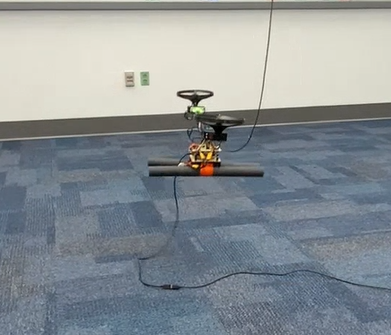
I built an RC Bicopter in as part of a five student team, the Pi-Pielots. Our goal was to build an bicopter capable of stable hover with a custom flight controller over the course of three two-week sprints. Throughout this project, I learned to better collaborate with other engineers, particularly in electrical and firmware integration. I used my skills in mechanical design and deepened my understanding of system modeling.
Initially, I worked with our team's electrical engineer to scope out components. I fixed two parameters to start: a 2:1 thrust to weight ratio, enabling powerful vertical flight, and a ratio of 2.5:1 of total aircraft mass to electronics mass. From here, I created an optimization script to itertively compare combinations of propellers and motors, then base vehicle mass (and thrust to weight ratio) on their masses and the masses of the ESCs and LiPo battery needed to run them. I chose servos based my calculations of the necessary torque to rotate the motor mounts, but ultimately just chose servos which were readily available, and produced significantly more than sufficient torque.

I iteratively developed the mechanical design of the drone, using rapid prototyping and kinematic calculations to find optimally prioritize light weight, airframe stiffness, crash resilience, affordability, and inherent stability.
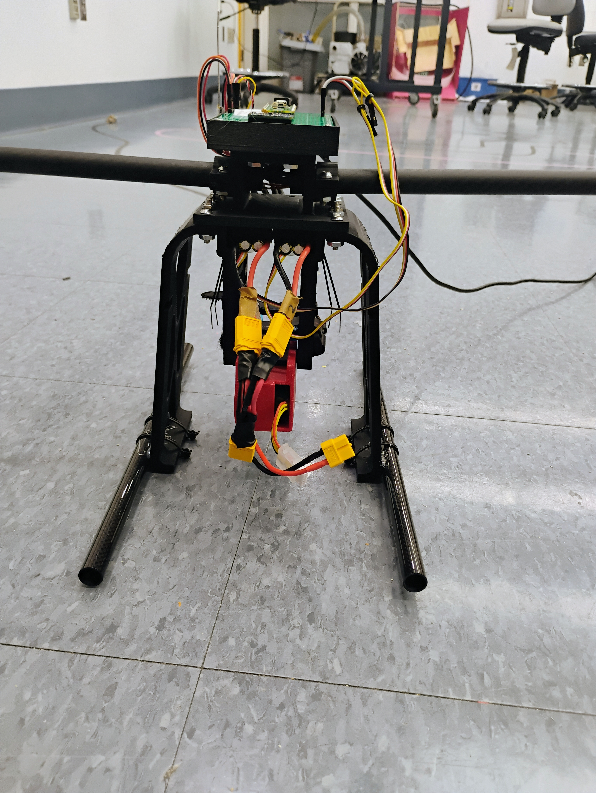
The initial designs were developed with an eye toward developing this into a tiltrotor aircraft, capable of both horizontal and vertical flight. I designed a robust 3D printed a PLA airframe with attachments for a fairing and other aerosurfaces, along with landing gear made from 3D printed PETG. I designed adjustable mounts for the battery (the aircraft's single largest mass componenet) which allowed for manual tuning of the center of
The initial designs were developed with an eye toward developing this into a tiltrotor aircraft, capable of both horizontal and vertical flight. I designed a robust 3D printed a PLA airframe with attachments for a fairing and other aerosurfaces, along with landing gear made from 3D printed PETG. I designed adjustable mounts for the battery (the aircraft's single largest mass componenet) which allowed for manual tuning of the center of mass to optimize stability.
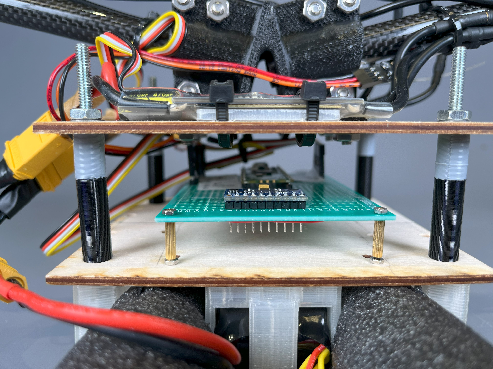
When it became clear that flight controller development was the key task at hand, I replaced this with a lightweight design using a small 3D printed clamp. A pair of wooden plates connected with bolted joints protect the electronics. Additionally, I replaced the landing gear with simple pieces of foam, making the aircraft more robust during testing, where crashes were frequent.
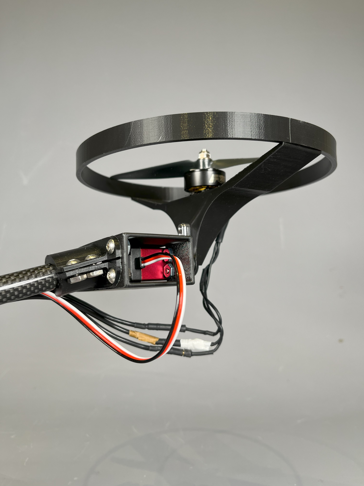
Like a quadcopter, a bicopter can exert some control over its attitude by changing the magnitude of the thrust from each motor. However, two axes of motion are controlled by changing the direction of thrust. I connected the motors to servos, which could rapidly adjust the tilt angle.
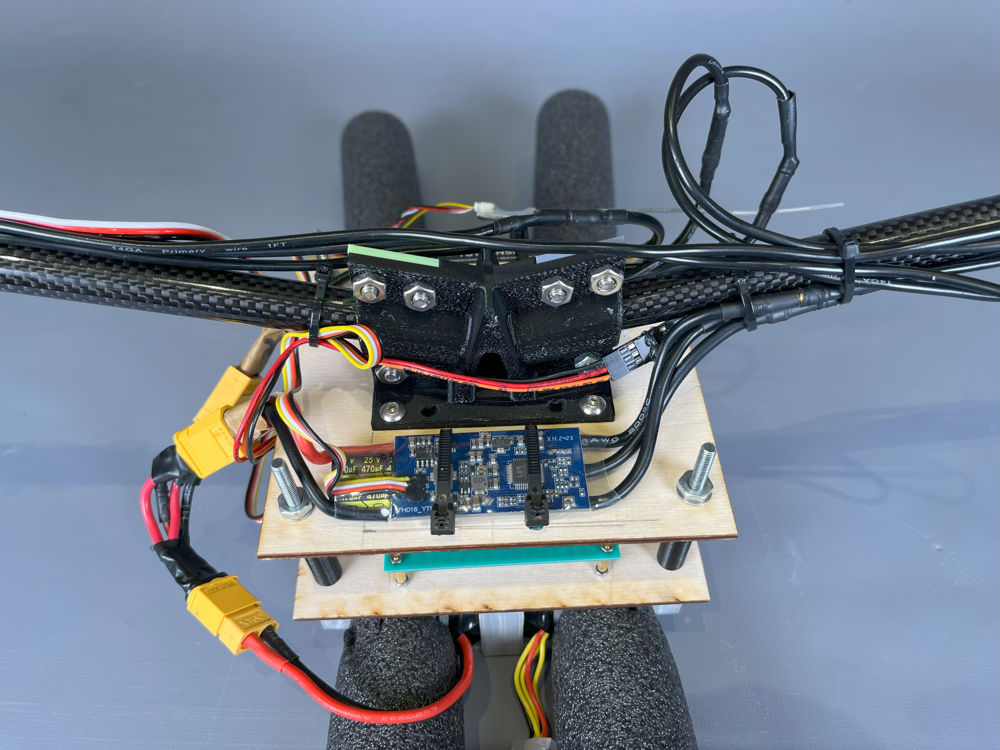
The servo/motor pods were attached by 3D printed clamps to a pair of carbon fiber tubes, selected for their light weight and stiffness. I maximized the the vertical cross section of the central clamp, as most loading was due to either the weight of the motor pods at the end (when the aircraft was landed) or their vertical thrusts (during flight).
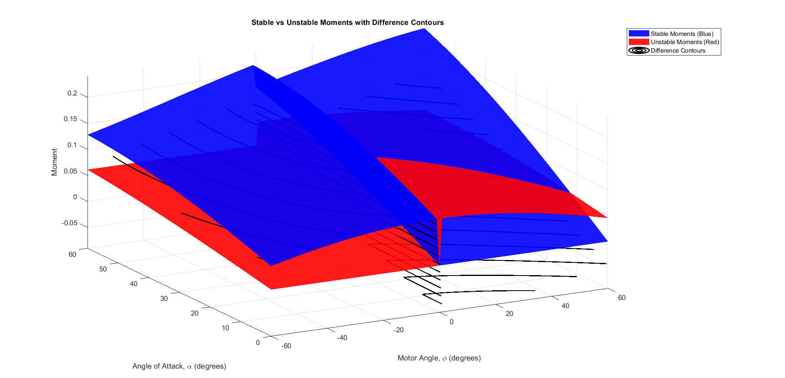
To inform the development of the flight controller, I developed a model of the aircraft's stable and unstable regimes. I determined a center of mass for the aircraft based on an accurate CAD model. I then created a model which incorporated the gravitational forces on mass components above and below the center of mass, as well as the motor thrusts, at all possible motor angles and aircraft pitch inclinations. This led to a multivariable optimization problem, in which I sought to determine boundary conditions for the aircraft's stable regime.
This helped improve the flight controller, which used a PID loop to automatically maintain the aircraft's stability.
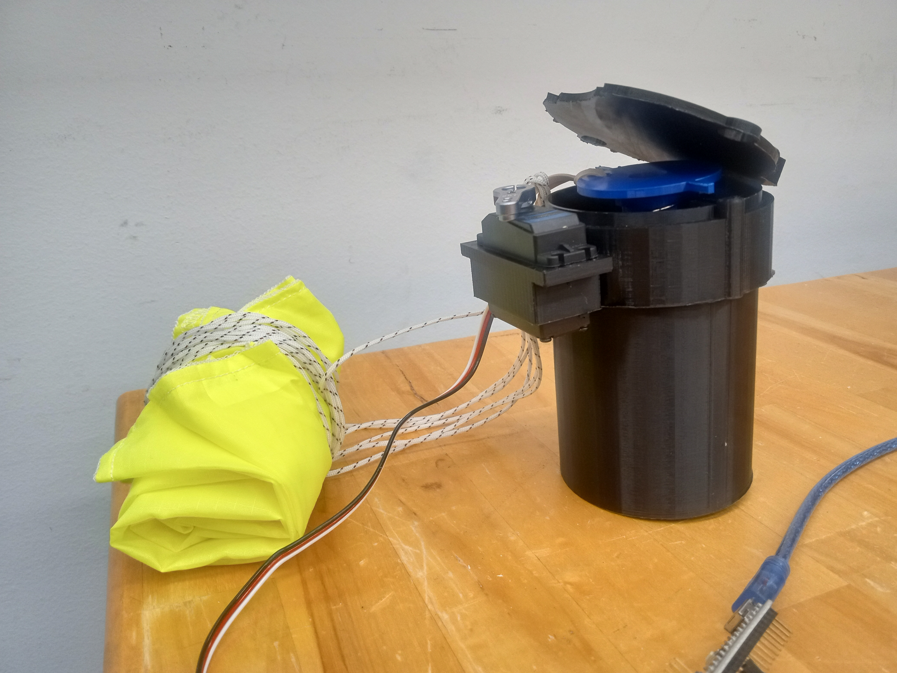
My first drone related project was a drone mountable parachute system which I built as part of a research project for the Olin Robolab and Draper Labs. I learned the basics of control and filtering algorithms, implementing a complementary filter using arduino and an MPU6050 IMU in order to activate a spring loaded parachute instantaneously, but only if the drone fell out of stable flight conditions.